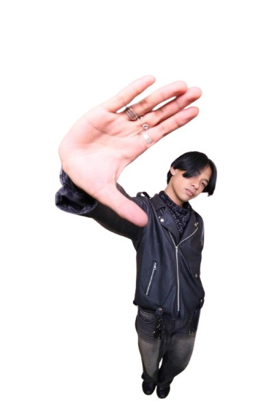

Saya adalah individu yang independen dengan fokus yang jelas terhadap tujuan yang ingin dicapai. Saya mengutamakan proses dalam setiap langkah yang diambil serta mampu menjaga komunikasi yang efektif dalam berbagai situasi.
SELENGKAPNYA →Mampu beradaptasi di berbagai lingkungan dan situasi baru dengan cepat dan tepat.
Menjaga komunikasi efektif dalam tim maupun lintas divisi sebagai sekretaris dan koordinator.
Berpengalaman memimpin divisi dan menjadi penggerak dalam berbagai kegiatan organisasi.
Bersertifikat MTCNA Mikrotik dan IC3 GS6, aktif di bidang infrastruktur jaringan dan web.
Aktif sebagai Sekretaris Umum Himpunan Mahasiswa Ilmu Komputer Universitas Lampung 2026. Memimpin koordinasi administrasi seluruh kegiatan himpunan.
Public Relation & External Manager di Radian Labs Batch 1 (2026). Mengelola hubungan eksternal dan komunikasi publik platform digital.